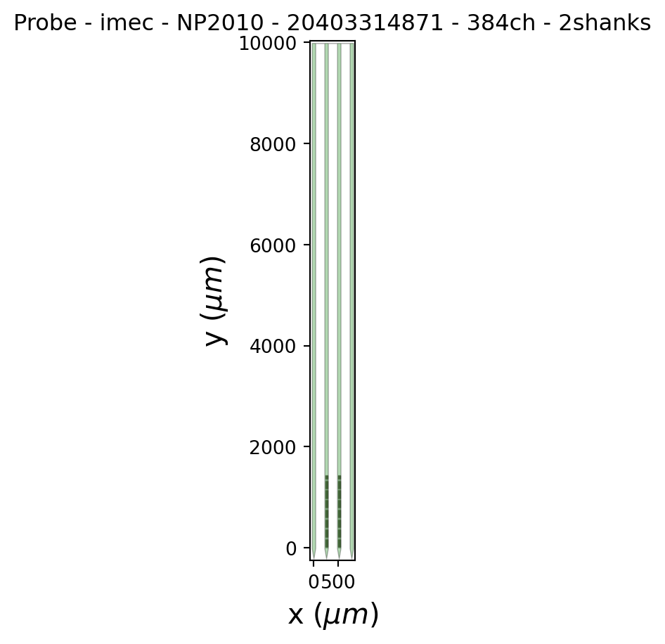
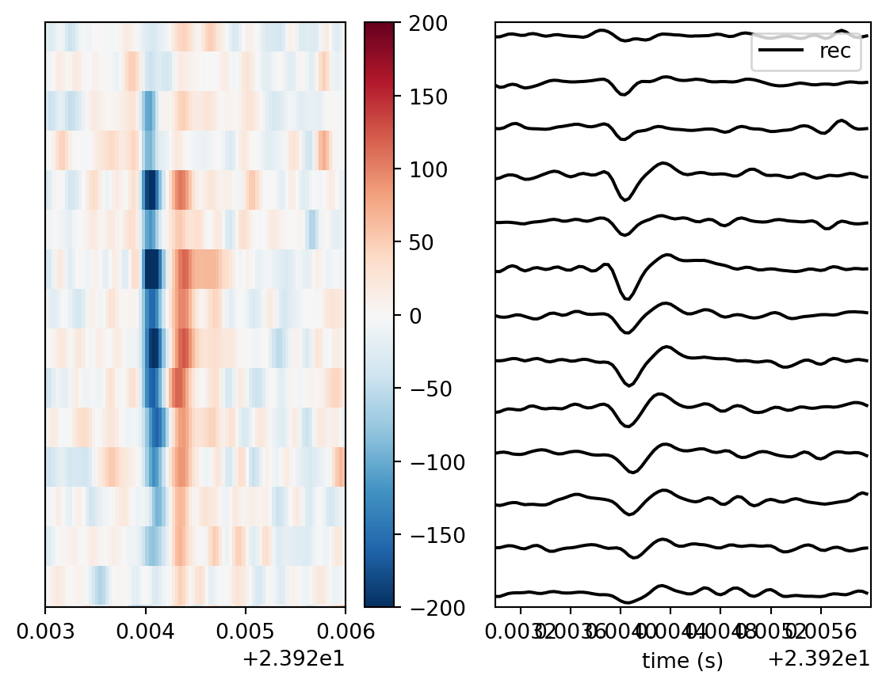

In this chapter, we will code an entire spike sorting pipeline using SpikeInterface. We will load and preprocesing the data, run spike sorting and compute metrics for assessing the sorting quality.
In this walkthrough, we will use an example dataset available here. This dataset contains XXX minutes of data recorded on 384 channels, located on the middle two shanks of a 4-shank Neuropixels probe, acquired in SpikeGLX.
ADD THE COMPELTELED WALKTHROUGH. SAY DON’T COPY. DONT USE AI. TYPE IT ALL.
Section 1: Loading and data exploration
Loading the data
SpikeInterface can load data from many different types of acquisition systems, using functions within its extractors module. As our data is from SpikeGLX, we will use the read_spikeglx method.
We need to tell SpikeInterfafce where the data is, and what data stream we want to load.
Streams written by SpikeGLX can include the action potential (AP) band, local feild potential (LF) band and a sync stream. Because we want to load the AP data stream for spike sorting, we pass "imec0.ap".
NoteDetails on SpikeGLX streams
In earlier versions of Neuropixels probes, the data was filtered in the probe into two separate streams. The action potential (AP) band was filtered with high-pass filter (300, 500 or 1000 Hz depending on settings). This removes low-frequency component, keeping the action potentials (which are typically in the 300-3000Hz range) untouched. This stream was used for spike sorting.
^^CHECK THIS (LOWER) https://pmc.ncbi.nlm.nih.gov/articles/PMC3715549/#:~:text=Note%20that%20we%20here%20for,setup%20and%20the%20mathematical%20model. https://d.lib.msu.edu/etd/10273?__goaway_challenge=header-refresh&__goaway_id=ca01fdb6671dc71b62462ce092b4bbd1&__goaway_referer=https%3A%2F%2Fd.lib.msu.edu%2F (HIGHH 1k-5k)
A local-field potential band was also written, filtered using a 300 Hz low pass filter. This removes high-frequency data (including action potential) and left low-freuqnecy local feild potential (LF). The LF band represents the summed oscilatiosn of votlage from across the brain and is subject to differnt analysiss.
In more recent Neuropixels versions (e.g. Neuropixels 2) there is no logner a distinction betweeen data streams. The unfiltered data is written to disk (saved in the imec0.ap band suffix, although it is now broadband), and popst-hoc filtering left up to the user.
There is also a sync stream. that records a digital sync signal. This allows you to align the neural data to external events (behaviour, stimuli, other data streams, or other probes) by embedding shared TTL pulses into the recording.
import spikeinterface.extractors as si_extractors# This should be the path to the folder contaning# the data. On Windows, you may need to preprend# r to the string e.g. r"C:\my\path"path_to_data_folder ="data/pipeline-walkthrough"recording = si_extractors.read_spikeglx( path_to_data_folder, stream_id="imec0.ap")print(recording)
The loading functions return the recording as a Python object, which contains many useful methods for exploring the recording metadata as well as accessing the underlying data.
NoteDetails on class inheritence in SpikeInterface
Under the hood, SpikeInterface XX widely relies on a class inheritence model, and the Recording object is a good example of this. A BaseRecording object defines many useful functions for interacting with a recording for example getXXX (see the API docs here). All other recording objects inherit from this BaseRcording object, for example our SpiekGLXRecordingExtractor object inherits from BaseRecording, and so contains all of this.
Every recording-like object we will deal with doday inherits from BaseRecording and so includes all this functionality. Often, these inherited classes add some functinoaity on top. For example, BaseRecording has a get_traces() fucntion that returns the underlying data. A Filter recording extends this function to first filter the data before returning it.
Exploring the Recording object
The recording object is a Python object contaning maybe useful methods. The SpikeInterface API Documentation is a useful resource for looking up methods associated with an object and their arguments. TODO MENTION BASERECORDING.
You can also use Python’s dir() functoin to see all attributes and methods associated with any Python object.
print( [method for method indir(recording) if method.startswith("get")])
This is a good time to play around with the recording, using the API docs (BaseRecording object) to navigate it. Have a go at:
Print the locations of all channels on the probe.
Print the time vector associated with the recording.
Use get_traces() to retrieve a segment of the raw data as a NumPy array. What are its dimensions?
Visualising the probe
There are many different types of probe used in extracellular electrophysiology (e.g. Neuropixels, Cambridge Neurotech, NeuroNexus ). They can come in very complex arrangements. Probeinterface is a library used by SpikeInterface (and by the same developers) to load many different types of probe.
It is important to check that your probe has loaded as expected, and that the geometry matches how it was set up in your acquisition software. To do this, we can plot the probe to confirm it loaded correctly:
from probeinterface.plotting import plot_probeimport matplotlib.pyplot as pltprobe = recording.get_probe()plot_probe(probe)plt.show()

Here we can see we have a two-shank Neuropixels probe with recording sites on the two central shanks, as was expected. You can also use the show_contact_ids argument to display the contact IDs, to double check the exact location of each contact.
Visualising the data
Extracellula relectrophysiological data is suceptible to many noise sources, including electrical noise, phyical noise from movements in the probe as well as phyiscal issues with the probe (?).
As such, it is important to visualise the data, especially after preprocessing, to check the data quality. First, lets’s plot one second of data from our raw recording:
Here we return in uV to ensure the data is returned in interpretable units, and use order_channel_by_depth as the default ordering of channels on the probe is not always by depth (WHY? represents how stored by acquisition system?)
As we can see - the data looks terrible! It is contaiminated with sever electrical noise and other issues. We will need to preprocess it to tidy it up.
NoteA note on scaling to uV
Most acquisition systems will store data in int16 format (i.e. integers in the range XXX) to save storage space. To get these values, the acquired data in uV is scaled and offset into the int16 range.
By default, SpikeInterface will display the raw int16 data. To use the stored offsets and gains to reconstrct XX, we can use the return_in_uV argument on many functions. Also see XX, XX and XX for working with these.
Section 2: Preprocessing
To preprocess the data, we will pass our recording object into functions that return a new, recording object. e.g. filtered_recording = bandpass_filter(recording).
This is almost instantenous as all preprocessing is applied ‘lazily’. When we apply the preprocessing function, we just change the metadata associated with the recording. Only when we get the data (e.g. in plot_traces, or with get_traces() or when saving the data) is the data preprocessed in the requested chunk. This makes operating very fast!
Below, we will apply three key preprocessing steps. In the next chapter, we will dive into more detail on the theory of these steps and inrtoduce more.
phase_shift : corrects a hardware artefact in the Neuropixels probe which causes small shifts between the recording time across nearby channels.
bandpass_filter : removes high and low frequency oscillations from the data. It is applied to each channel separately.
commmon_reference : removes noise spikes that appear as verticle stripes across the data. It is applied across channels separately at each timepoint.
We can easily apply these preprocessing steps with the processing module:
Look carefully at the plot above. Why do you think there are predictable gaps in the signal every two channels?
NoteClick to reveal the answer
For many probes, it is normal to have slight differences between adjacent channels because they are often in column format. One column can get a stronger signal than another.
Here however there is significantly different signal every two channels. This is because we are plotting all shanks together, in y-axis order. So different shanks are interspersed.
We can solve this by spliting the recording by shank with the groups property. When SpikeInterface loads the data, it will automatically assign different shanks to different groups.
Now we have our preprocessed data, and have visually confirmed the data quality is good, we are ready to perform spike sorting!
Additional things to try
Here are some optional tasks to try to furthe familiarlise yourself with preprocessing in spikeinterface.
Section 2: Sorting
What we are fundamentally interested in doing is XXX.
Now we are ready to move onto spike sorting. In our data, we can see by eye the action potentials recorded on the probe:

A close up of a single action potential on the probe.
Although we can easily indetify these by eye, it is the sorters job both to algorithmically detect these action potentials (hereforth called ‘spikes’) and separate them. XXX
In this schematic, ….
In SpikeInterface, running a sorter is quite simple. Today, we will run Kilosort4, and we can do it with a single function call:
import spikeinterface.sorters as si_sorterssorting = si_sorters.run_sorter("kilosort4", cmr_recording, remove_existing_folder=True, do_CAR=False, highpass_cutoff=0.1,)print(sorting)
KiloSortSortingExtractor: 83 units - 1 segments - 30.0kHz
You will see the sorting output written to disk. This contains all of the output files of the sorter. We will go through these outputs in detail XXX. The key outputs are spike_times.npy, and spike_clusters.npy. EXPLAIN
We also have this information in a spikeinterface sorting object. We can get it e.g.:
SPIKE TIMES SPIKE CLUSTERS
Section 4: Postprocessing
This will be a whitestop tour. We will go into much more detail later. What is teh purpose of this.
create sorting analyzer
In SPikeInterface, the main construct for work with postprocessing of spike sorting outputs is the SortingAnalzyer object. We can create the SortingAnalzyer by passing the sorting output and recording to a sorting XXX.
TODO: give overview. We will choose spikes, cut out waveform, compute templates etc. amplitudes. basically extract the features of the detected APs.
We can create a SortingAnalyzer we need to pass our preprocessing recording and the sorting output:
from spikeinterface import create_sorting_analyzeranalyzer = create_sorting_analyzer( sorting=sorting, recording=recording)
Using this sorting analyzer interface, we will compute all of the postprocessing we need to assess the quality of our sorting.
Some sorters will output their own waveforms, templates, amplitudes ETC (for example, Kilosort has a templates.npy file containnig the templates it generated during sorting).
These are not loaded by SpikeInterface. Instead, the sorting analzyer will always recompute these features directly from the passed recording.
compute spikes
In our sorting, we can have many many detected spikes. This may be in the order of millios of spikes for an hour long recording.
To process all of these spikes would be computationally intensive, and give diminishing gains. We can instead sample a subset of spikes. In this step, we will randomly select spikes uniformly from the recording with the max_spikes_per_unit argument.
The waveforms array is three dimensional (num waveforms, num samples, num channels). Indexing the first dimension will get us the 2d waveform. We can transpose the matrix so that it is num channels x num timepoints and plot it ourselves to confirm by plotting the raw array.
SOME THINGS TO TRY 1) PLOT SOME OTHER WAVEFORMS 2) PLOT SOME WAVEFORMS FROM UNIT XXX USING THE SPIKE_CLUSTER INFORMATION 3) COMPUTE THE MEAN OF ALL WAVEFORMS xxx
templates
The template is a representative wavecform from a putative neuron. Often, it is computed as the average waveform from all of the spikes that were assigned to a unit i.e. thought to be fired from the same neuron.
We can compute the extension and access the templates with:
There are a number of different features we can compute from our waveforms and templates, which are useful for quality assessment. We will explore more of these in detail in XXX.
One of thes features i the spike amplitude. It is assumed that the amplitud eof a neuron shouold be imila across the recording. If the amplitude decreases, for example, acroess the ession, maybe the neuron dead.